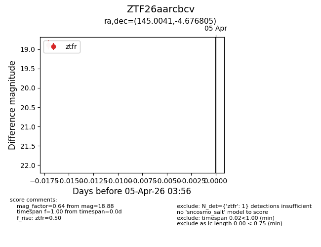
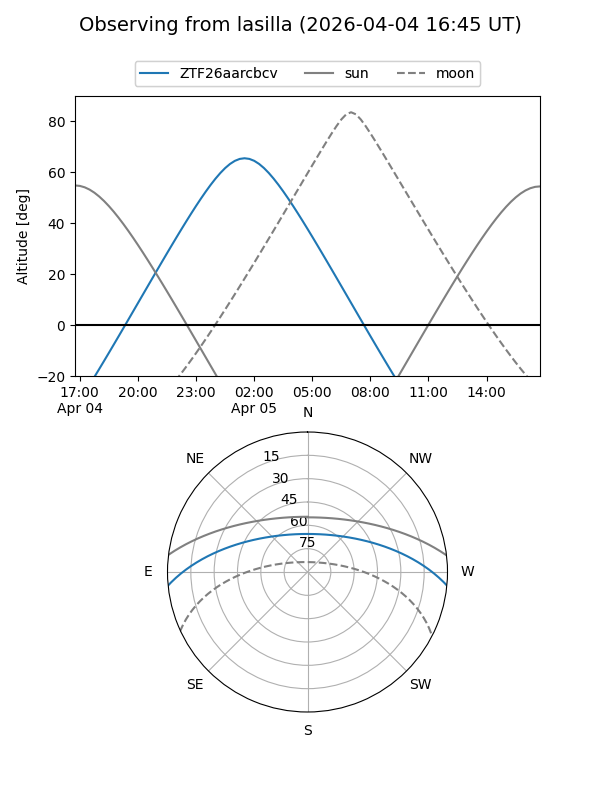
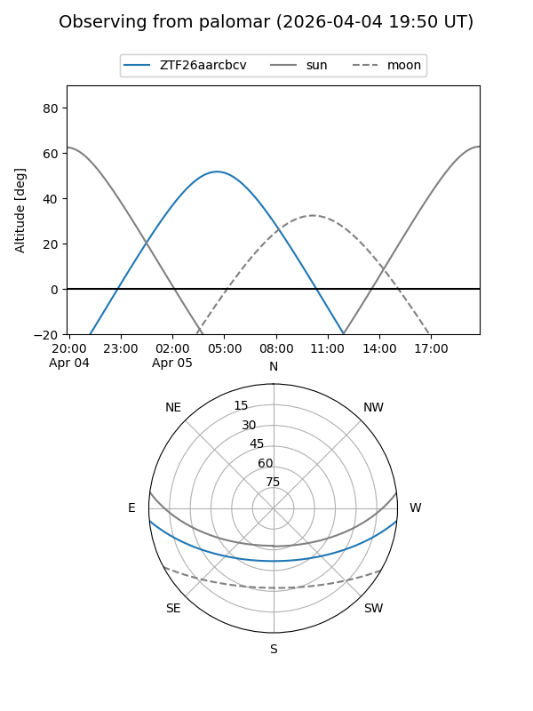

ZTF26aarcbcv
Target ZTF26aarcbcv at 2026-04-05 04:00
Aliases and brokers:
FINK: link
Lasair: link
ALeRCE: link
alt names
ZTF26aarcbcv (ztf,fink_ztf)
Coordinates:
equatorial (ra, dec) = 145.0041,-4.67680
equatorial (HMS+DMS) = 09:40:00.98,-04:40:36.50
galactic (l, b) = (239.9923,+33.91889)
Flags:
Photometry:
last ztfr=18.88
1 ztfr detections
Lightcurve

Visibility


Additional plots